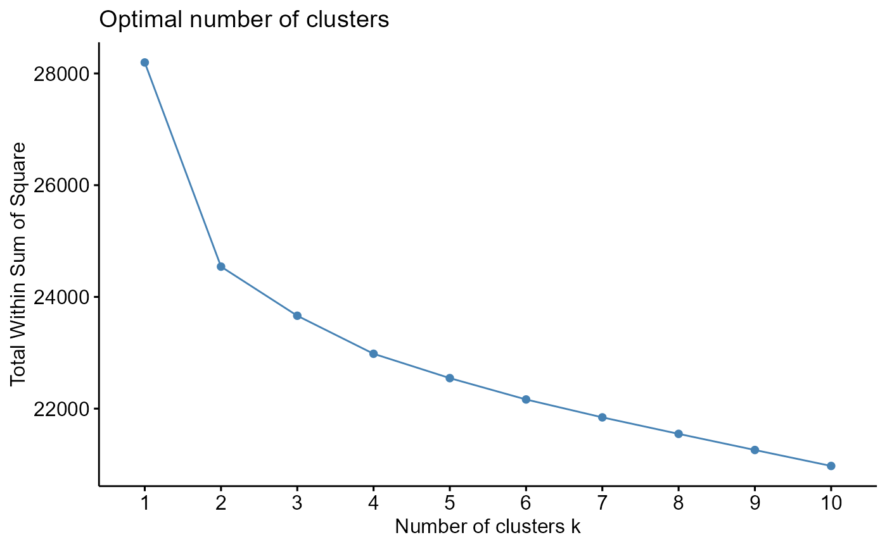
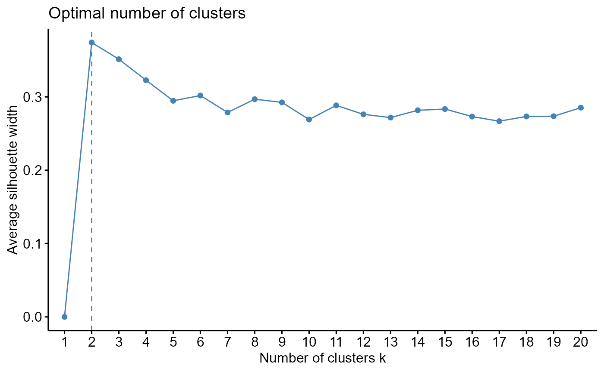

MovieDataCleaner is a package used to clean datasets, especially ones with large amounts of missing data. Missing data can often be an issue in larger datasets and can be found in almost any area of interest, not just movies, therefore dealing with missing data is a problem that one is likely to encounter. This package is best suited for Movie datasets from MovieLens but can be used on any dataset. This package is able to impute missing values into a dataset using either kNN or NMF. If you wish to cluster your final dataset this packages also has the capability to do that using kmeans clustering.
Load package and dataset
Here we load our package and dataset from MovieLens which contains lots of missing values. We also remove the first column which is a column for userIds.
library(MovieDataCleaner)
load("../data/ratings_wide.rdata")
ratings_wide <- ratings_wide[,-1]Clean initial dataset
Two functions from our package drop_rows and
drop_columns can be used to remove rows and columns from a
dataset that contain extraordinary large amounts of missing data. This
can help make the imputation proccess less substantial.
new_data <- drop_columns(0.9, ratings_wide)
new_data <- drop_rows(0.7, new_data)Above we create a new dataset new_data which we will
work with from now on out. This new dataset still contains lots of
missing values but not as much as our original data. Columns that
contained over 90% of missing values were dropped and rows that
contained over 70% of missing values were dropped. Now we have a datset
ready to have values imputed for missing data.
kNN Imputation
First we will use the run_knn_imputation function on our
new dataset.
knn_imputed <- run_knn_imputation(5, new_data)
head(knn_imputed, c(5, 5))
#> 1 2 6 10 11
#> 18 3.50 3.0 4.000000 3.5 3.583333
#> 19 4.00 3.0 3.250000 2.0 3.500000
#> 21 3.50 3.5 3.400000 5.0 3.500000
#> 28 3.80 3.5 3.500000 3.0 3.000000
#> 41 4.25 3.0 3.642857 3.5 3.625000Imputation is done using the value of 5 for the k in our nearest neighbor imputation function. Looking at the first 5 rows and columns we see now that our dataset has values where there used to be missing values.
Clustering with knn imputed dataset
Now that we have a full dataset we can cluster that dataset to see
what movies are alike. The clustering functions in this package look
only at clustering on columns. optimal_knn_kmeans_clusters
takes a knn imputed dataset to determine the optimal number of
clusters.
optimal_knn_kmeans_clusters(knn_imputed)Here we see that when looking at the average silhouette width the
optimal number of clusters is 2. Next
get_knn_kmeans_elbow_plot returns an elbow plot for the
optimal number of clusters.
get_knn_kmeans_elbow_plot(knn_imputed)
Looking at the elbow plot we again see that 2 is a solid choice for
the amount of clusters to look at with this dataset. Now we will use
run_knn_movies_clustering to cluster our data into 2
clusters using kmeans.
run_knn_movies_clustering(2, knn_imputed)Using this value of 2 we are able to get a visualization of our data
separated into clusters. Now we run get_knn_clustered_data
which takes two arguments. The first is the original data to get our
original column names, since in our case this data had movieIds as
column names. We lost our specific column names when we imputed values.
The second is the knn imputed dataset which will be clustered on.
knn_clustered_data <- get_knn_clustered_data(new_data, knn_imputed)
head(knn_clustered_data, c(5, 3))
#> movieId Cluster title
#> 1 1 2 Toy Story (1995)
#> 2 2 1 Jumanji (1995)
#> 3 6 2 Heat (1995)
#> 4 10 1 GoldenEye (1995)
#> 5 11 2 American President, The (1995)Here our final dataset now allows us to see how movies were separated into clusters.
NMF Imputation
First we will use the run_nmf_imputation function on our
new dataset.
nmf_imputed <- run_nmf_imputation(3, new_data)
head(nmf_imputed, c(5, 5))
#> 1 2 6 10 11
#> [1,] 3.964327 3.301046 3.979432 3.535942 3.497563
#> [2,] 3.555535 2.956230 3.376583 2.874200 2.810149
#> [3,] 3.837982 3.572990 3.502947 3.286207 4.056003
#> [4,] 2.894560 2.342503 3.327496 3.152028 3.015873
#> [5,] 3.994328 3.550856 2.914950 2.134487 2.485927Imputation is done using a rank 3 NMF and multiplying out the wdh matrices. Looking at the first 5 rows and columns we see now that our dataset has values where there used to be missing values.
Clustering with NMF imputed dataset
Now that we have a full dataset we again can cluster that dataset to
see what movies are alike. optimal_nmf_kmeans_clusters
takes a nmf, here we use the one returned from running NMF imputation
above, to determine the optimal number of clusters.

Here we see that when looking at the average silhouette width the
optimal number of clusters is 2 once again. Next
get_nmf_kmeans_elbow_plot returns an elbow plot for the
optimal number of clusters, taking in a NMF as an argument.
Looking at the elbow plot we again see that 2 is a solid choice for
the amount of clusters to look at with this dataset. Then we use
run_nmf_movies_clustering to cluster our NMF into 2
clusters using kmeans.
run_nmf_movies_clustering(2, nmf)Using this value of 2 we are able to get a visualization of our data
separated into clusters. Next we run get_nmf_clustered_data
which takes two arguments. The first is the NMF to get our original
column names, since in our case this data had movieIds as column names.
We lost our specific column names when we imputed values. The second is
our kmean returned from running NMF clustering above.
nmf_clustered_data <- get_nmf_clustered_data(nmf, kmean)
head(nmf_clustered_data, c(5, 3))
#> movieId Cluster title
#> 1 1 1 Toy Story (1995)
#> 2 2 1 Jumanji (1995)
#> 3 6 2 Heat (1995)
#> 4 10 2 GoldenEye (1995)
#> 5 11 1 American President, The (1995)Here we once again have a final dataset that allows us to see how movies were separated into clusters.